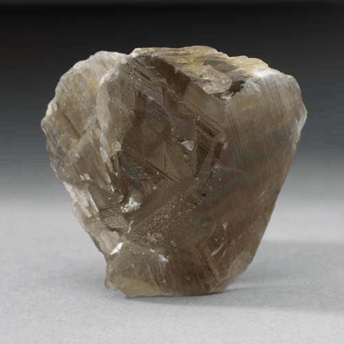

Diaspore - AlO(OH)
Hydroxides


Habit: As crystals, platy, elongated, sometimes prismatic or Acicular; rarely tabular. Also massive, foliated and thin scales. White, grayish-white, colorless, also greenish-gray, brown, yellowish, lilac, pink. Transparent to translucent, vitreous to brilliant Luster.
Environment: Forms in metamorphic rocks, such as schists and marbles, where it is often associated with corundum, manganite and spinel. It is also found in Hydrothermally altered rocks, and in sediments.
Etymology: From the Greek for to scatter, a reference to the way diaspore crackles when strongly heated